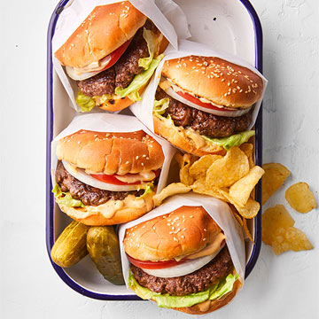

Summertime Smashed Burgers

Delicious Summertime Burgers
These burgers are perfect for summertime hangouts and cookouts.
Whether you're getting together for the game, or hanging out with
friends these burgers will be sure to delight. Made on an iron
griddle or a cast iron skillet these burgers will be absolutely
satisfying.This recipe comes from resident chef Jamie Purivance.
Ingredients
- 1/3 cup mayonnaise
- 3 tablespoons ketchup
- 2 tablespoons minced dill pickle
- 1 tablespoon spicy yellow mustard
- 1/4 teaspoon bottled hot sauce
- 1 teaspoon kosher salt
- 1/2 teaspoon sugar
- 1/4 teaspoon ground black pepper
- 1/4 teaspoon onion powder
- 1 pound ground beef
- 1 tablespoon vegetable oil
- 4 sesame seed hamburger buns, split
- 4 slices desired cheese (optional)
- 4 0.125 inch slices Vidalia or other sweet onion
- 4 leaves iceberg or romaine lettuce, torn to fit into buns
Steps
- Prepare a gas or charcoal grill for direct cooking over medium-high heat
(400° to 450°). Place a cast-iron griddle* on grill grate, close the lid,
and preheat until very hot, 5 to 10 minutes. Meanwhile, prepare Special Sauce:
Stir together mayonnaise, ketchup, minced dill pickle, mustard and hot sauce.
- In a small bowl, stir together kosher salt, sugar, black pepper and onion powder.
Divide ground beef round into four pieces. Do not shape into patties, but season on
both sides with salt mixture.
- Lightly brush the hot griddle with vegetable oil. Place ground beef portions on griddle,
well-spaced. Immediately smash each into a patty about 1/4-inch thick with a wide, sturdy
spatula. Close lid and cook for 3 to 4 minutes. Clean the spatula, then scrape patties from
the griddle and flip. Smash again, close lid, and cook to medium (160°), 3 to 4 minutes more.
(If adding cheese, do so in the last minute of cooking.) Serve on toasted sesame seed buns
with thinly sliced onion, tomato, torn lettuce and Special Sauce.